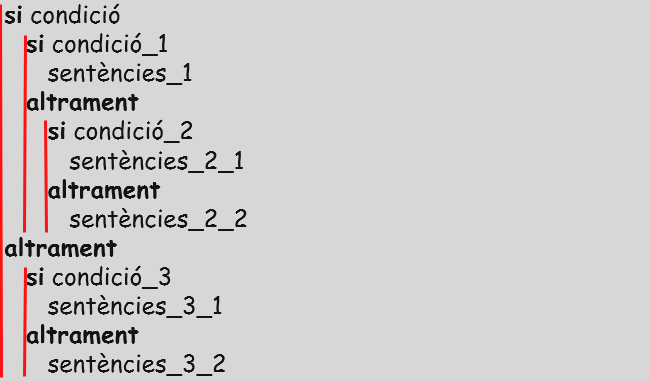

3.4 DECISIONS
BONES PRÀCTIQUES
Ús de la indentació
Cada cop que s'entra a una estructura es fa un tabulat endins, i cada cop que es surt, es fa un tabulat enfora. Per veure-ho més clar:  Una bona indentació ha de permetre als programadors saber què obra i tanca cada clau de forma ràpida.
Evitar la repetició de codi
Per aquests motius, cal trobar la forma d'evitar repetir el codi. Alguns consells:
- Determinar les operacions comunes per totes les estructures.
- Comprovar les branques dels condicionals que no fan més instruccions de les que haurien de fer.
- Determinar si grup d'instruccions s'ha de repetir per força, cal escollir a quin punt del codi.